Guia básico - Instalação Visual Studio Code
Olá, como algumas pessoas (só a Karol) pediu para auxiliar a baixar, instalar e configurar o Visual Studio Code para a linguagem 'C', resolvi criar esse tutoriazinho aqui :) Obviamente tem centenas de videos ensinando a fazer isso, porem vou explicar de maneira resumida e rápida.
Como baixar?
Para baixar é muito simples, basta entrar no site oficial da IDE (Clique aqui para baixar)
e pressionar o botão Download para Windows (Ou o Sistema operacional que você utiliza)

Como Instalar?
Após realizar o download e executar o arquivo de instalação, selecione o idioma de sua preferência
aceite os termos de contrato, e marque as opções desejadas (todas são opcionais)
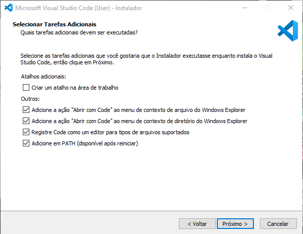
Instalação - Extensões
Após realizar a instalação, execute o studio code e siga as imagens abaixo
para instalar as extensões necessárias para a linguagem 'C'
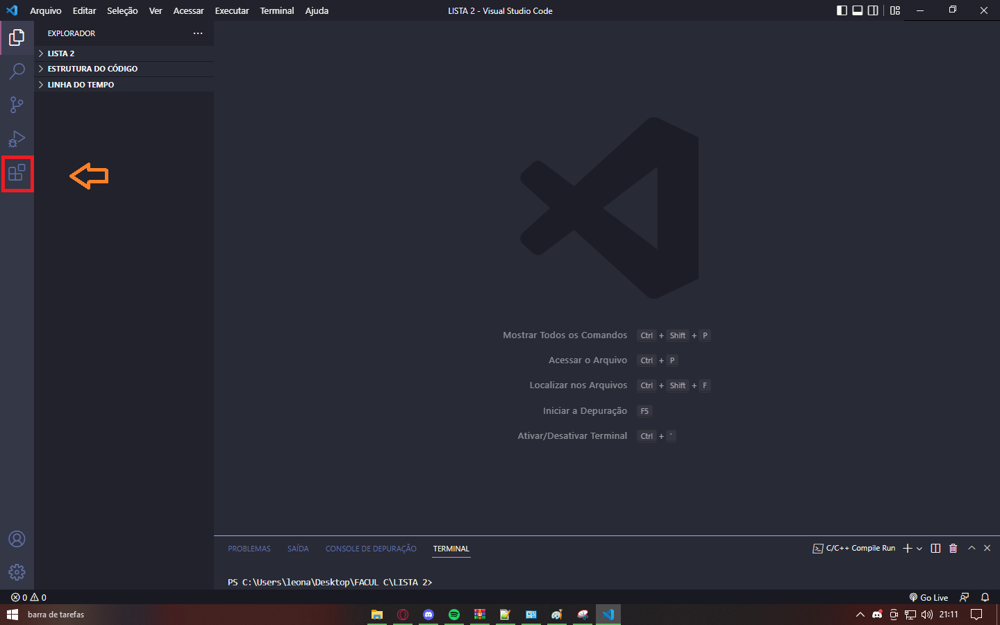
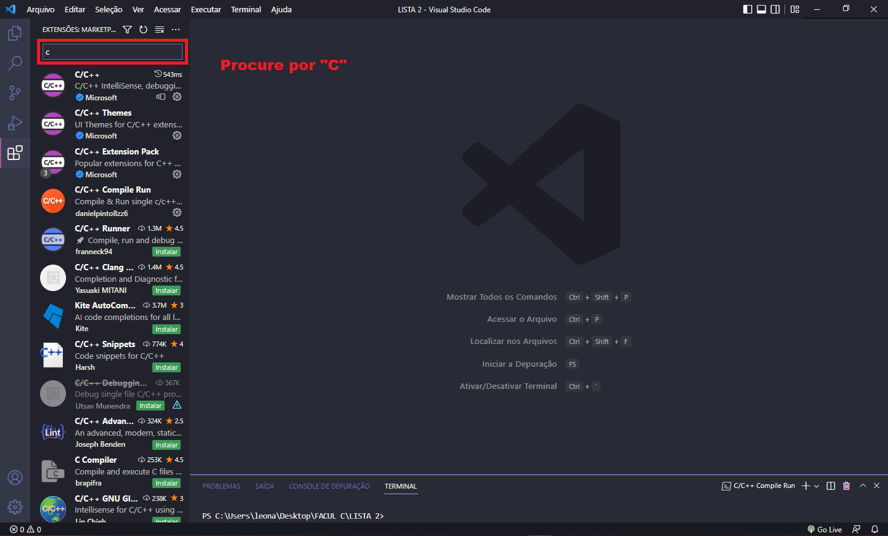
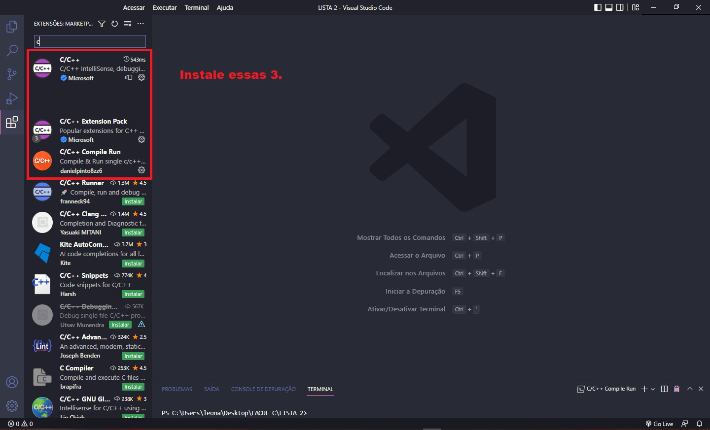
Pronto! Após isso a instalação e configuração do Visual Studio Code está finalizada, agora será necessário
instalar o MinGW (Não é necessário caso utilize o sistema operacional Ubuntu)
MinGW - Instalação
Para compilar a linguagem C no Windows, é necessario instalar alguns "pacotes"
e para fazer isso, é necessario baixar o MinGW (Clique aqui para baixar)
Siga as imagens abaixos para efetuar a instalação:
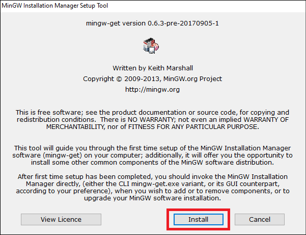
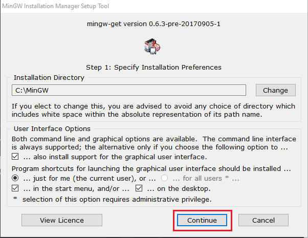
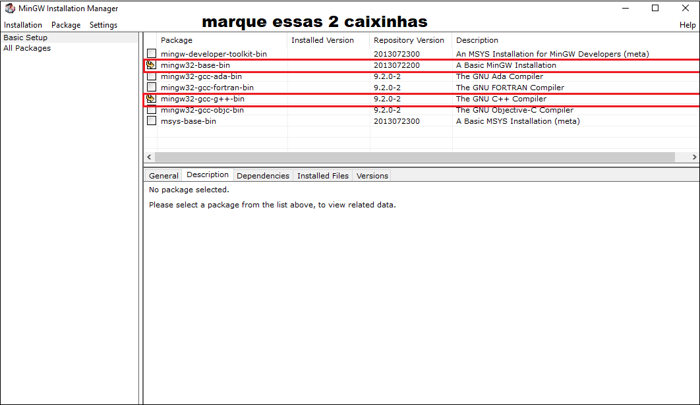
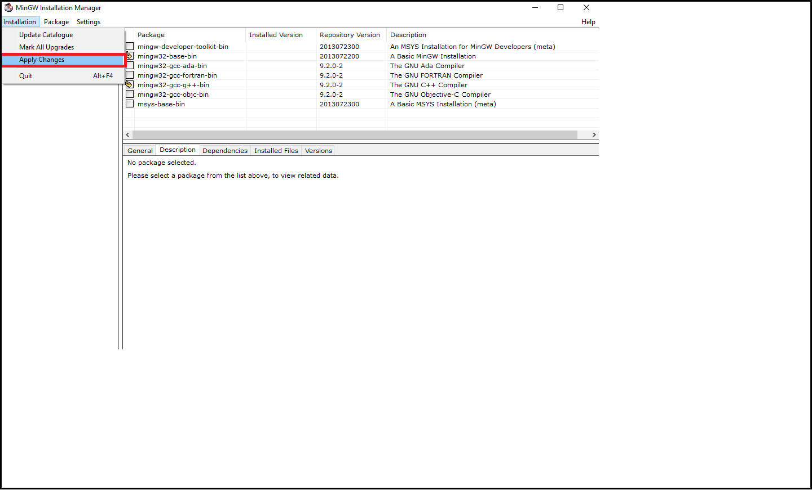
Pronto, MinGW instalado e pronto para compilar progamas.. Agora falta o último passo para tudo funcionar
perfeitamente em seu computador!
Variáveis Ambientes:
E por último, mais não menos importante é necessário realizar algumas coisas na varíaveis do Windows
1. Primeiramente Procure por "variavéis" na busca do Windows
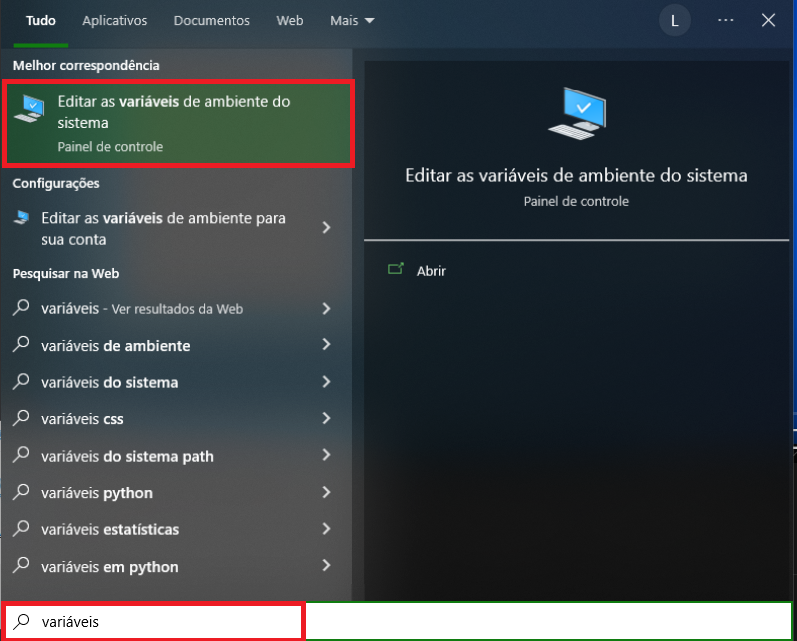
2. Clique na opção "Variáveis de ambiente"
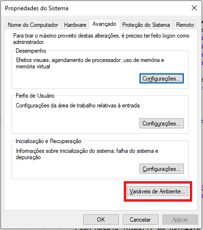
3. Selecione a aba "Path" e clique na opção "Editar"
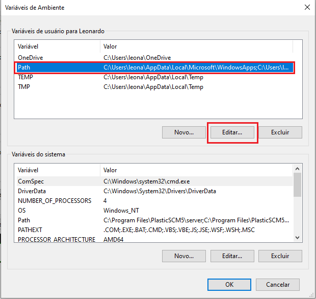
4. Clique em "Novo" e cole o directorio da instalação do MinGW (Geralmente é instalado em "C:\MinGW\bin")
4.1. Após isso, presione em OK
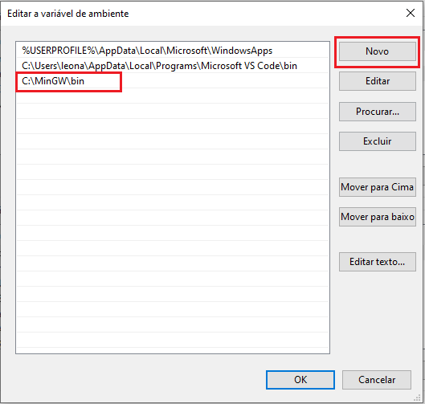
5. Repita esse mesmo processo no quadrado abaixo (Selecione "PATCH" e clique em editar"

6. E novamente clique em "Novo" e cole o directorio da instalação do MinGW
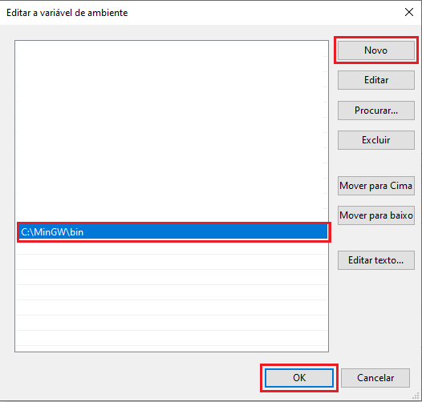
Finalização
Para garantir que tudo funcione perfeitamente, reinicie o computador!Após isso já está tudo funcionando e você já pode utilizar o visual studio code para compilar arquivos .c :)
Guia Básico para iniciar no Studio Code
Para deixar seus codigos de maneira organizada no studio code, crie uma pasta em algum directorioeu utilizo na area de trabalho mesmo.
1. Após criar uma pasta, dentro do studio code procure pela aba "Arquivo" e clique em "Abrir Pasta"
1.1 Após isso, selecione a pasta que você criou
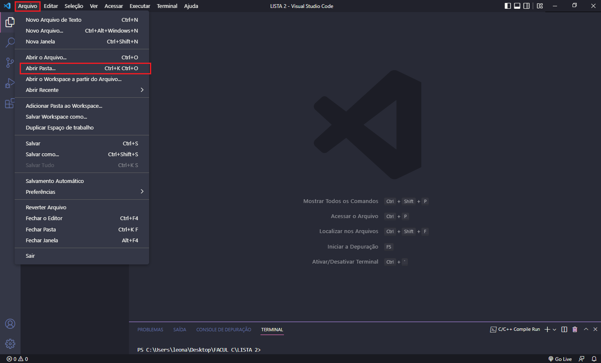
2. Agora basta clicar com o botão direito nesse espaço e criar um novo arquivo
Obs: O nome do arquivo sempre deve vim acompanhado da extensão .c (EX: alfa.c)
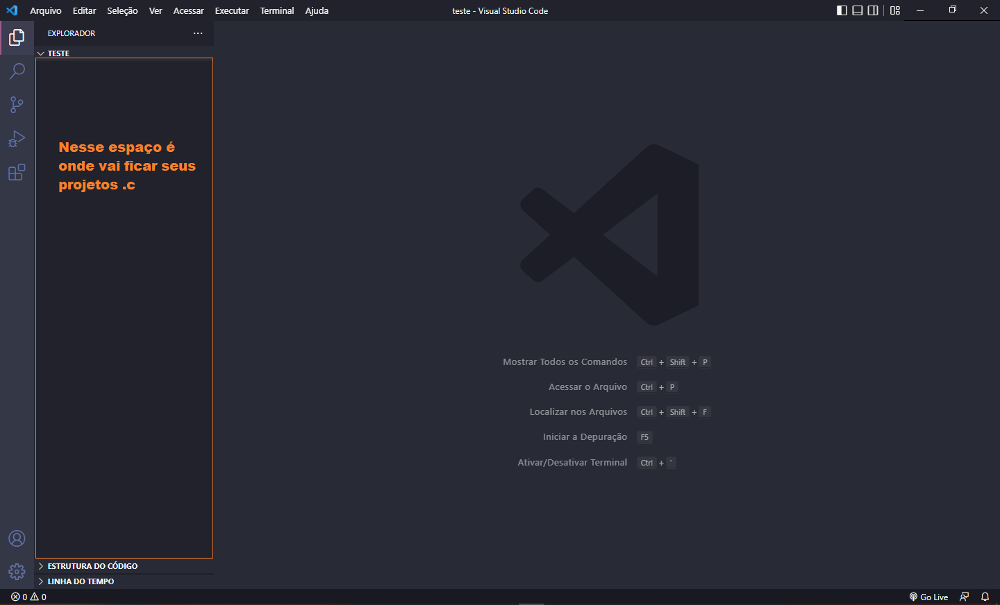
Finalização - Pronto, agora é só começar a codar :)
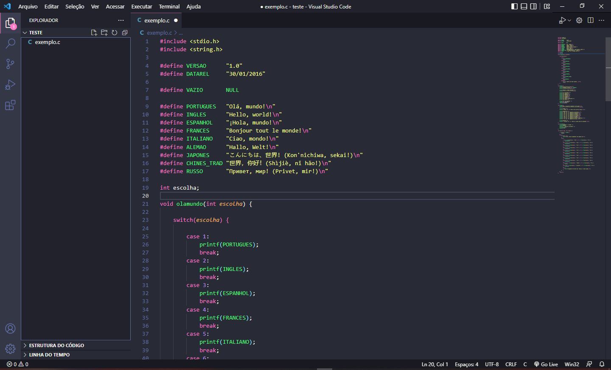